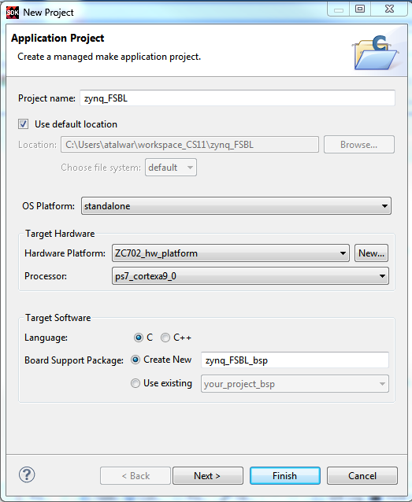

To create a new Zynq®-7000 AP SoC FSBL application in SDK, do the following:
-
Click File > New > Application Project. Note: This is equivalent
to clicking on File > New > Project to open the New Project wizard,
selecting Xilinx > Application Project, and clicking Next.
The New Application Project dialog box appears.

- In the Project Name field, type a name for the new project.
-
Select the location for the project. To use the default location as displayed
in the Location field, leave the Use default location check box
selected. Otherwise, click to unselect the check box, then type or browse to the
directory location.
The Hardware Platform drop-down list comes with pre-defined hardware platforms for ZC702 , ZC706 & ZED hardware. You can use this to start your application on the fly, instead of going for any hardware design creation tools. These are specific to the PS-only part of Zynq-7000 AP SoC devices.
- From the OS Platform drop-down list, select the target OS Platform.
- Select the options for the target hardware:
- Select the appropriate target platform from the Hardware Platform drop-down list.
- Select the Create New option from the list to create a new hardware platform project.
- From the Processor drop-down lists, select the appropriate target processor.
- Select the options for the target software:
- Select the appropriate Language option. For this example, select C/C++.
- Select the Create New option of Board Support Project to create a new board support package project. Note: Alternately, select Use existing to select the existing Board Support Package projects.
- Click Next.
-
In the Templates dialog box, select the Zynq-7000 AP SoC FSBL template.

- Click Finish to create your application project and board support package (if it does not exist).